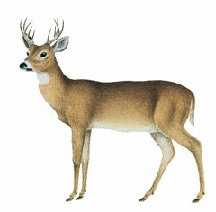
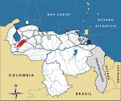

Odocoileus lasiotis
| Venado paramero | |
|---|---|
|  | |
| Riesgo de extinción | |
 En peligro (UICN) | |
| Clasificación científica | |
| Reino: | Animalia |
| Filo: | Chordata |
| Clase: | Mammalia |
| Orden: | Artiodactyla |
| Familia: | Cervidae |
| Género: | Odocoileus |
| Especie: | Odocoileus lasiotis |
| Nombre binomial | |
|
Odocoileus lasiotis Osgood, 1914 | |
| Distribución | |
|
 Mapa de distribución de Odocoileus lasiotis | |
Contenido
Información de Evaluación
- Categoría y Criterio Regional: En Peligro B1ab(iii)
- Fecha de Evaluación Regional: 2015
- Evaluadores: Jesús Morales-Campos y Ariany García-Rawlins
- Categoría y Criterio Global: No Evaluado
Justificación
Evaluaciones Previas
1999: En Peligro (EN)
2008: En Peligro B1ab(iii) (EN)
Información General
Nombres comunes
Venado paramero, venado de páramo de Mérida, Mérida white-tailed deer, páramo white-tailed deer.
Notas taxonómicas
Sinónimos
Descripción
Venado de tamaño mediano, mide de 90 a 150 cm de cabeza a cola. Su pelaje es denso y muy largo (30-50 mm en dorso y lados). Posee una inconfundible coloración parda grisácea oscura, con un manchado negruzco en la cabeza y parte superior de la cola (Osgood 1914, Molinari 2007). Los ejemplares de Mucubají (estado Mérida) tienden a ser más pardos que los de otros páramos, lo cual podría indicar la existencia de endogamia (J. Molinari obs. pers.).
Distribución
Odocoileus lasiotis es endémica de Venezuela. Su distribución está restringida a la sierra Nevada y a la sierra de La Culata, en la mitad norte del estado Mérida. Habita ambientes de páramo, por encima de 3200 m de altitud. La estimación de la distribución de los páramos andinos (incluyendo páramos arbustivos, herbáceos y desérticos) de la sección central de las sierras citadas, arroja una superficie menor a 1600 km2, tomando en cuenta que una parte importante de estos ecosistemas en la región se encuentran severamente intervenidos por un uso agropecuario. No penetra en selvas nubladas, aunque utiliza, para esconderse, vegetación arbustiva densa, bosquecillos de Polylepis y plantaciones de coníferas exóticas (Osgood 1914, Molinari 2007). Su validez taxonómica ha generado controversias (Moscarella et al. 2003). Originalmente todos los venados de cola blanca de América se agrupaban en Odocoileus virginianus, dentro de la cual se incluyó como subespecie a Odocoileus virginianus goudotii, y como sinónimo de esta subespecie a Odocoileus virginianus lasiotis (Cabrera 1961). Sin embargo, otras investigaciones concluyeron que los Odocoileus neotropicales se dividen en varias especies, tres registradas en Venezuela y una de ellas es Odocoileus lasiotis (Molina, M. y Molinari 1999, Molinari 2007).
- Sistema: Terrestre
- Bioregión:
- Intervalo altitudinal (m): >3200
- Endémica: Sí
Situación
Pese a su importancia ecológica, a su condición de especie amenazada y a los esfuerzos realizados en las últimas dos décadas por conocer su biología, Odocoileus lasiotis no ha sido suficientemente estudiada, por lo cual no se dispone de información referente al estado actual de sus poblaciones, una de las cuales, la mejor conocida, consiste entre 240 y 250 individuos, y se ubica en los alrededores de la laguna Mucubají (Molina, M. y Peñaloza 2000). La misma subsiste protegida por coníferas exóticas, que le sirven de refugio, y por los guardaparques, pero es acosada de forma constante por perros realengos. Las poblaciones vecinas a Mucubají están sufriendo la expansión de la agricultura y la ganadería; un desarrollo reciente en particular preocupante dada la escasa extensión de los páramos es el reemplazo del arbustal paramero de valles y laderas por pastos exóticos, lo cual se hace para multiplicar la ganadería extensiva (J. Molinari obs. pers.). Si bien estos pastos pueden incrementar la producción de ganado, no son usados por los venados para su alimentación. En el ámbito global la especie clasifica en la categoría Preocupación Menor (Gallina y López Arévalo 2008). Sin embargo no se considera el estatus de las subespecies aquí tratadas como especies plenas. Se estima que abarque una extensión de hasta 3859,94 km2.
- EOO (km2): Temporalmente sin información
- AOO (km2): Temporalmente sin información
- Tendencia Poblacional: Desconocida
Amenazas
Los perros asilvestrados constituyen la principal causa de mortalidad (unos 13 venados/año) para la población del páramo de Mucubají y sus alrededores (Molina, M. y Peñaloza 2000). A ello se añade la creciente colonización agrícola dentro de los parques nacionales Sierra Nevada y Sierra de La Culata, la caza furtiva y la destrucción del hábitat, lo cual podría atentar contra la supervivencia de Odocoileus lasiotis en un futuro inmediato. Aunque existe competencia por alimento con el ganado bovino y equino, este es un factor menos importante que los anteriores, al menos en ambientes en los cuales el arbustal paramero no ha sido reemplazado con pastos exóticos.
Conservación
En nuestro país se estableció la veda indefinida de esta especie en 1996 (Venezuela 1996a). La actividad de los cazadores furtivos en el páramo de Mucubají, parque nacional Sierra Nevada, se ha hecho difícil a causa de las plantaciones de coníferas exóticas, la vigilancia permanente y la gran afluencia de turistas. Sin embargo, urge controlar las poblaciones de perros asilvestrados en los páramos, y hacer cumplir las leyes que prohíben la colonización agrícola y la caza furtiva dentro de los parques nacionales Sierra Nevada y Sierra de La Culata. Se recomienda iniciar una campaña educativa, y un programa de cría en cautiverio con fines de repoblación en los páramos de la cordillera de Mérida en los cuales la especie pudiera haber sido extirpada. Para conservar la mayor diversidad genética posible, este programa debería iniciarse con ejemplares originarios de varios páramos.
Autorías
Autores originales
Jesús Molinari, Daniel Lew y Javier Sánchez-Hernández
Colaboradores
Ilustrador
Michel Lecoeur / Especie similar: Odocoileus gymnotis (LC)
Referencias
- Gallina, S. y López Arévalo, H. (2008). Odocoileus virginianus. The IUCN Red List of Threatened Species. Version 2012.2. Disponible en www.iucnredlist.org.
- Molina, M. y Molinari, J. (1999). Taxonomy of Venezuelan white-tailed deer (Odocoileus, Cervidae, Mammalia), based on cranial and mandibular traits. Canadian Journal of Zoology 77: 632-645.
- Molina, M. y Peñaloza, J. A. (2000). Dog predation on Páramo white-tailed deer: the case of Mucubají, Sierra Nevada National Park. Memoria de la Sociedad de Ciencias Naturales La Salle 154: 139-144.
- Molinari, J. (2007). Variación geográfica en los venados de cola blanca (Cervidae: Odocoileus) de Venezuela, con énfasis en O. margaritae, la especie enana de la Isla de Margarita. Memoria de la Fundación La Salle de Ciencias Naturales 167: 29-72.
- Molinari, J., Lew, D. y Sánchez-Hernández, J. (2015). Venado paramero, Odocoileus lasiotis. En: J.P. Rodríguez, A. García-Rawlins y F. Rojas-Suárez (eds.) Libro Rojo de la Fauna Venezolana. Cuarta edición. Provita y Fundación Empresas Polar, Caracas, Venezuela. Recuperado de: animalesamenazados.provita.org.ve/content/venado-paramero Lun, 19/03/2018 - 15:05
- Moscarella, R. A., Aguilera, M. y Escalante, A. A. (2003). Phylogeography, population structure, and implications for conservation of white-tailed deer (Odocoileus virginianus) in Venezuela. Journal of Mammalogy 84: 1300-1315.
- Osgood, W. H. (1914). Four new mammals from Venezuela. Field Museum of Natural History Publication. Zoological Series 10: 135-141.
- Rodríguez, J. P. y Rojas-Suárez, F. (1999). Libro Rojo de la Fauna Venezolana, segunda edición. PROVITA, Fundación Polar. Caracas. 444 pp.
- Rodríguez, J. P. y Rojas-Suárez, F. (Eds.) (2008). Libro Rojo de la Fauna Venezolana, tercera edición. Provita y Shell Venezuela, S. A. Caracas, Venezuela. 364 pp.
- Venezuela. (1996a). Decreto 1485: Animales Vedados para la Caza. Gaceta Oficial No. 36.059 - 7 de octubre de 1996. Caracas.